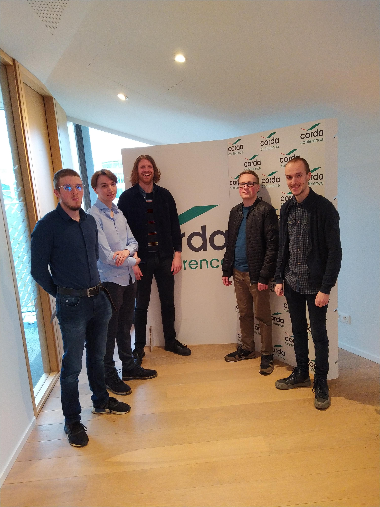
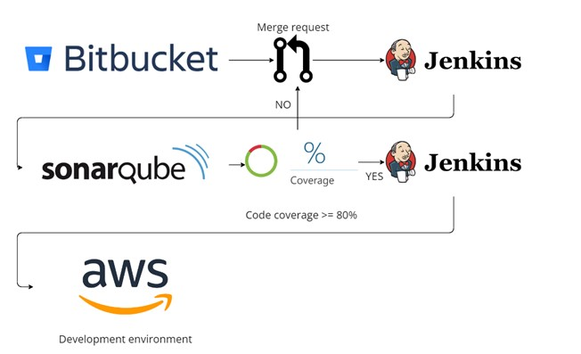
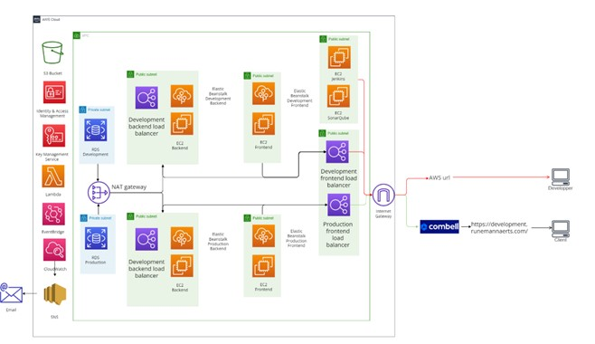

Project 4.0
Assignment
The general assignment was to build an e-commerce web application for small to medium businesses. This web application needed to have the latest technologies like NextJS and Java SpringBoot. The web application needed to be built with different modules, so the customer could add or remove features without the need to change the entire architecture. The web application needed to be headless so the front end and backend could communicate with API’s.
The customer
The customer was Elision, a company who built web solutions for small to medium companies. They provided End to End Commerce, Customer Engagement, Continuous Engagement, Continuous Optimization, and Managed services. They were an SAP partner, but they wanted us to develop a solution without SAP, so the smaller customers could afford it.
the group
Expectations
The client wanted us to build an e-commerce web application with the newest technologies. The clients expected us to deliver this web application in the form of a cloud environment with all the configurations made. The web application needed to be publicly accessible through AWS route 53. There needed to be a scalability group and a load balancer so a larger customer could ask for 3 instances and smaller companies could ask for only 1 instance. There also needed to be a monitoring system and backups at regular intervals, and the client had to be able to choose the time between the backups.
My Part
Deployment workflow
When there was a new feature merged into our development branch, a Jenkins pipeline started. This pipeline copied the code from our development branch and sent it to SonarQube. When there was less than 80% code coverage by unit tests, the pipeline stopped. If there was more than 80% code coverage, the pipeline deployed the frontend and the backend to the AWS development environment.
Stable development environment
When our development environment is stable, we can trigger a pipeline which will send everything to our production AWS environment.

Load balancer
If you wanted to spin up more than one EC2 in the frontend or the backend we will provide a load balancer in each auto scaling group. So, you can easily scale the production or development, frontend and backend.
Documentation
handoff: handoff project 4.0 elision team b3